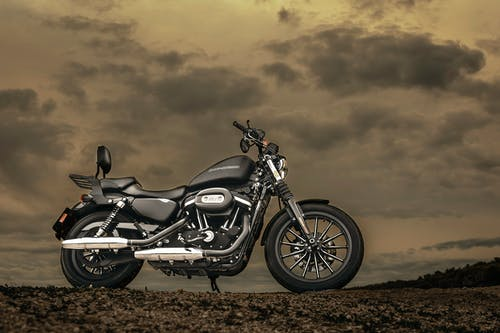

Greetings! This webpage is all about me. I am an animal lover and like gardening too. I am in standard 7. I have created more than 110 coding projects till date and to know more about me, read on..
CHARACTER - REVIEW
My all time most favorite character is Charlie Chaplin. So, what was so great about Charlie Chaplin? Famous for his character 'The Tramp,' the sweet little man with a bowler hat, mustache and cane, Charlie Chaplin was an iconic figure of the silent-film era and was one of film's first superstars, elevating the industry in a way few could have ever imagined. The character is so witty and comical in each of his ways.
BROWSE THROUGH TO FIND OUT ABOUT MY HOBBIES...
I love reading and writing, as it represents my knowledge in an abstract and creative manner. I read in my free time and am always I a good temper when I do so. Reading is a very good habbit and I got this hooby indeulged in me naturally. I admire the Adventure Series By Enid Blyton and my favorite book is 'The Island Of Adventure' (a tale about 4 children who take lots of difficult and unavoidable trips to uncover the secret of the island) and 'The Naughtiest Girl' (a tale of recovery and transformation of a pretty, intelligent girl named Elizabeth.) I have written a book 'The Adventure Of Gabriels' which is about four children who have a nose for adventure. Yes, Brook, Ella, Jack and Molly are all ready to face the underlying dangers of Mt. Frost Fiend. Besides, I have also written a short story which you can find at the link below -
I have been learning rifle shooting and am a district gold-medal shooter. It is interesting and keeps me involved and busy. Accepting the fact that practising is very important, I joined a nearby stadium to enhance my skills.
Music. It is a very soothing and calm hobby, in my opinion. I love classical music and am learning piano. As for guitar, it is really fun to play and I practise it every day.
Coding also counts as my hobby and I am learning HTML, CSS and JS. Coding is very interesting and involving becuase one simply can't leave it until it emerges right. Also, apart from that, it is fun to create website, apps, softwareas and let the whole world see your creativity at its best! The world of coding is very important in the today's world and technology is rapidly changing. Also, programming is a fascinating skill to enhance. I also will begin with Python language very soon. Till now, I have created over 110 projects and hope to create more!
Drawing, sketching and painting are one of my best past times. Art is a therapy which relaxes one's mind and is really indulging. I beleive one should draw at least somethng everyday, no matter what, it may be a swirly doodle or a shaded pencil work. Art has a very positive impact on one's mind and makes him/her more eloquent. These were a glimpse of some of my drawings.
My Work
I love coding and like to work on my projects till they are shaped to perfection. Here is a gallery displaying a few of my projects Click on them to view-
I love staying outdoors and picnicing. I like travelling, too and want to go around the world one day.
My favorite acedemic subject is Science and I am always interested in reading and studying about it. I am fascinated by all the different concepts of Chemistry, Physics & Biology around us and digging even deeper about the topics.
I admire playing badminton and practise it everyday with my friends, who are great players, too.
I love to talk!

Motorbikes are simply my favorite! I wish to own Ecosse ES1 Spirit one day.